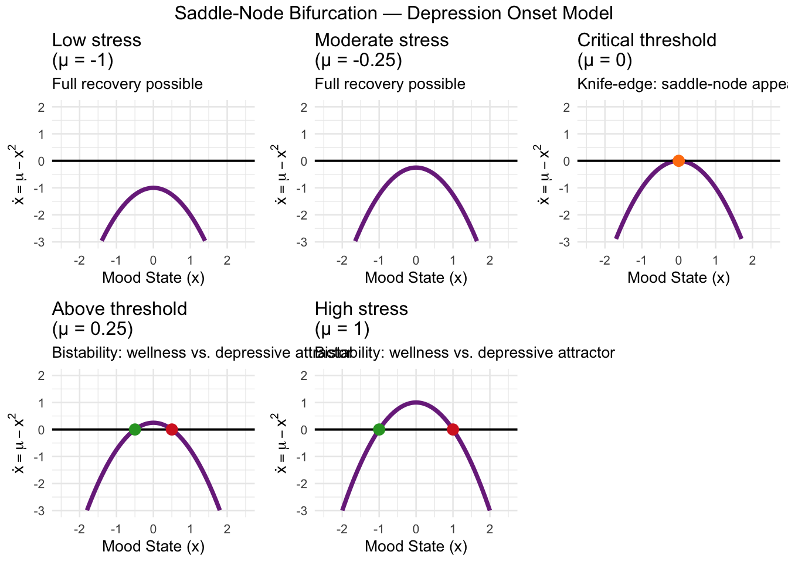

Chapter 6 Phase Lines in Mental Health Dynamics: Bifurcations, Bistability, and the Mathematics of Psychological Transitions
Our previous exploration revealed how phase lines and bifurcations govern dynamics in one-dimensional systems, using emergency department flow as our primary lens. Today we turn that same mathematical machinery toward mental health—a domain where the geometry of stability, tipping points, and hysteresis may be even more consequential. A person cycling between depression and remission, a trauma survivor locked in hypervigilance, a population splitting into treatment-adherent and treatment-avoidant subgroups—all of these are phenomena where bifurcation theory offers precise, testable formalisms rather than qualitative metaphors. pmc.ncbi.nlm.nih
6.1 Why Mental Health Is a Dynamical System
The clinical literature increasingly treats psychiatric disorders not as static trait categories but as dynamic processes—systems that evolve over time, respond nonlinearly to interventions, and can exhibit sudden transitions between qualitatively different states. The empirical signatures are unmistakable: patients don’t slide imperceptibly from wellness into depression—they often tip; antidepressant dose-response curves are non-monotonic; stress below a threshold produces resilience while stress above it produces collapse. pmc.ncbi.nlm.nih
These patterns are exactly what one-dimensional bifurcation theory predicts. By mapping clinical constructs—mood, stress load, treatment intensity, symptom burden—onto the state variable \(x\) and its governing dynamics \(\dot{x} = f(x, \mu)\), we gain a framework that is both mathematically rigorous and clinically interpretable.
6.2 Model 1 — Saddle-Node: Depression Onset as a Tipping Point
One of the most well-documented phenomena in affective neuroscience is the tipping point structure of depressive episodes. Below a critical stress/vulnerability threshold, small perturbations resolve; above it, the system collapses to a depressive attractor. This is the saddle-node bifurcation in action.
We model mood state \(x\) (where positive values indicate depressive symptom load above baseline) under cumulative stress parameter \(\mu\):
\[\dot{x} = \mu - x^2\]
When stress is low (\(\mu < 0\)), no equilibrium exists and all trajectories flow toward \(-\infty\)—the system naturally recovers. At the critical stress threshold (\(\mu = 0\)), a single semi-stable state appears. Once stress exceeds the threshold (\(\mu > 0\)), two equilibria emerge: a stable wellness attractor at \(x = -\sqrt{\mu}\) and an unstable tipping threshold at \(x = +\sqrt{\mu}\). Patients who breach the unstable threshold are captured by the depressive basin of attraction. frontiersin
##
## Attaching package: 'dplyr'## The following objects are masked from 'package:stats':
##
## filter, lag## The following objects are masked from 'package:base':
##
## intersect, setdiff, setequal, union##
## Attaching package: 'gridExtra'## The following object is masked from 'package:dplyr':
##
## combine## Loading required package: viridisLite# ── Saddle-node: Depression onset ────────────────────────────────────────────
# dot_x = mu - x^2
# x = mood deviation (positive = symptomatic burden above baseline)
# mu = cumulative stress / vulnerability parameter
f_depression <- function(x, mu) mu - x^2
mu_values <- c(-1, -0.25, 0, 0.25, 1)
labels <- c("Low stress\n(μ = -1)",
"Moderate stress\n(μ = -0.25)",
"Critical threshold\n(μ = 0)",
"Above threshold\n(μ = 0.25)",
"High stress\n(μ = 1)")
x_vals <- seq(-3, 3, by = 0.05)
sn_plots <- lapply(seq_along(mu_values), function(i) {
mu <- mu_values[i]
df <- data.frame(x = x_vals, fx = f_depression(x_vals, mu))
fp <- if (mu < 0) {
data.frame(x = numeric(0), col = character(0))
} else if (mu == 0) {
data.frame(x = 0, col = "semi-stable")
} else {
data.frame(x = c(-sqrt(mu), sqrt(mu)), col = c("stable", "unstable"))
}
p <- ggplot(df, aes(x, fx)) +
geom_line(colour = "#7B2D8B", linewidth = 1.3) +
geom_hline(yintercept = 0, linewidth = 0.7) +
ylim(-3, 2) + xlim(-2.5, 2.5) +
labs(title = labels[i],
x = "Mood State (x)",
y = expression(dot(x) == mu - x^2),
subtitle = if (mu < 0) "Full recovery possible"
else if (mu == 0) "Knife-edge: saddle-node appears"
else "Bistability: wellness vs. depressive attractor") +
theme_minimal(base_size = 10)
if (nrow(fp) > 0) {
colours <- c("stable" = "#2ca02c", "unstable" = "#d62728",
"semi-stable" = "#ff7f0e")
p <- p + geom_point(data = data.frame(x = fp$x, y = 0),
aes(x, y), colour = colours[fp$col], size = 3)
}
p
})
do.call(grid.arrange, c(sn_plots, ncol = 3,
top = "Saddle-Node Bifurcation — Depression Onset Model"))## Warning: Removed 64 rows containing missing values or values outside the scale range
## (`geom_line()`).## Warning: Removed 54 rows containing missing values or values outside the scale range
## (`geom_line()`).## Warning: Removed 52 rows containing missing values or values outside the scale range
## (`geom_line()`).## Warning: Removed 48 rows containing missing values or values outside the scale range
## (`geom_line()`).## Warning: Removed 40 rows containing missing values or values outside the scale range
## (`geom_line()`).
The phase portrait sequence makes the clinical picture precise: there is no continuous descent into depression, only a discrete transition once stress exceeds \(\mu = 0\). Interventions that reduce \(\mu\) (e.g., reducing stressor load, strengthening social support) lower the tipping threshold, widening the basin of attraction around the wellness equilibrium.
6.2.1 Bifurcation Diagram: Tracking the Wellness Attractor
# ── Saddle-node bifurcation diagram ─────────────────────────────────────────
mu_seq <- seq(-0.05, 1.2, by = 0.005)
bif_sn <- do.call(rbind, lapply(mu_seq, function(mu) {
if (mu < 0) return(NULL)
if (mu == 0) return(data.frame(mu = mu, x = 0, stability = "semi-stable"))
data.frame(mu = c(mu, mu),
x = c(-sqrt(mu), sqrt(mu)),
stability = c("stable", "unstable"))
}))
ggplot(bif_sn, aes(mu, x, colour = stability, group = interaction(stability, x >= 0))) +
geom_line(linewidth = 1.3) +
geom_vline(xintercept = 0, linetype = "dashed", alpha = 0.6) +
scale_colour_manual(values = c("stable" = "#2ca02c", "unstable" = "#d62728",
"semi-stable" = "#ff7f0e")) +
annotate("text", x = 0.05, y = 1.3, label = "Tipping\nthreshold",
colour = "#d62728", size = 3.5, hjust = 0) +
annotate("text", x = 0.05, y = -1.3, label = "Wellness\nattractor",
colour = "#2ca02c", size = 3.5, hjust = 0) +
annotate("text", x = 0.6, y = 0.05, label = "Bifurcation\npoint",
colour = "grey40", size = 3.2) +
labs(title = "Depression Onset — Saddle-Node Bifurcation Diagram",
subtitle = "Equilibria emerge at critical stress level μ = 0",
x = "Cumulative Stress / Vulnerability (μ)",
y = "Mood State Equilibrium (x)",
colour = "Stability") +
theme_minimal()
The characteristic parabolic shape encodes everything a clinician needs: below \(\mu = 0\), no stable depression is possible; above it, two states coexist—and the system can only escape the depressive attractor by reducing stress below the bifurcation point.
6.3 Model 2 — Pitchfork: Bipolar Mood Splitting
The pitchfork bifurcation models a different psychiatric phenomenon—the symmetry-breaking transition from a single stable mood baseline to two stable mood poles. This maps naturally onto bipolar spectrum dynamics, where a parameter crossing a critical value (e.g., antidepressant dose, circadian disruption) destabilizes euthymia and bifurcates the system toward either mania or depression. pmc.ncbi.nlm.nih
\[\dot{x} = \mu x - x^3\]
where \(x\) is mood deviation from euthymia (\(x = 0\)) and \(\mu\) indexes circadian or pharmacological destabilization.
For \(\mu < 0\), euthymia at \(x = 0\) is the unique stable state. For \(\mu > 0\), the euthymic state becomes unstable and two stable poles emerge at \(x = \pm\sqrt{\mu}\)—one depressive, one manic. The system must choose a pole; it cannot remain at euthymia. This is exactly the clinical pattern observed when antidepressants precipitate manic switches in vulnerable patients, as predicted by Goldbeter’s mood oscillation model. pmc.ncbi.nlm.nih
# ── Pitchfork bifurcation: Bipolar mood splitting ────────────────────────────
# dot_x = mu*x - x^3
# x = mood deviation from euthymia (positive = manic pole, negative = depressive pole)
# mu = circadian/pharmacological destabilization parameter
f_bipolar <- function(x, mu) mu * x - x^3
mu_values_pf <- c(-1, -0.1, 0, 0.5, 1.2)
labels_pf <- c("Stable euthymia\n(μ = -1)",
"Near-critical\n(μ = -0.1)",
"Bifurcation point\n(μ = 0)",
"Mood poles emerging\n(μ = 0.5)",
"Pronounced poles\n(μ = 1.2)")
pf_plots <- lapply(seq_along(mu_values_pf), function(i) {
mu <- mu_values_pf[i]
df <- data.frame(x = x_vals, fx = f_bipolar(x_vals, mu))
fp <- if (mu < 0) {
data.frame(x = 0, col = "stable")
} else if (mu == 0) {
data.frame(x = 0, col = "semi-stable")
} else {
data.frame(x = c(-sqrt(mu), 0, sqrt(mu)),
col = c("stable", "unstable", "stable"))
}
colours <- c("stable" = "#2ca02c", "unstable" = "#d62728", "semi-stable" = "#ff7f0e")
ggplot(df, aes(x, fx)) +
geom_line(colour = "#1f77b4", linewidth = 1.3) +
geom_hline(yintercept = 0, linewidth = 0.7) +
geom_point(data = data.frame(x = fp$x, y = 0),
aes(x, y), colour = colours[fp$col], size = 3) +
ylim(-2, 2) + xlim(-2, 2) +
labs(title = labels_pf[i],
x = "Mood Deviation (x)",
y = expression(dot(x)),
subtitle = if (mu <= 0) "Unique euthymic attractor"
else "Euthymia unstable; manic/depressive poles stable") +
theme_minimal(base_size = 10)
})
do.call(grid.arrange, c(pf_plots, ncol = 3,
top = "Pitchfork Bifurcation — Bipolar Mood Splitting"))## Warning: Removed 80 rows containing missing values or values outside the scale range
## (`geom_line()`).## Warning: Removed 72 rows containing missing values or values outside the scale range
## (`geom_line()`).## Warning: Removed 70 rows containing missing values or values outside the scale range
## (`geom_line()`).## Warning: Removed 66 rows containing missing values or values outside the scale range
## (`geom_line()`).## Warning: Removed 58 rows containing missing values or values outside the scale range
## (`geom_line()`).
6.3.1 Bifurcation Diagram: The Fork
# ── Pitchfork bifurcation diagram ────────────────────────────────────────────
mu_seq_pf <- seq(-1, 1.5, by = 0.005)
bif_pf <- do.call(rbind, lapply(mu_seq_pf, function(mu) {
if (mu < 0) return(data.frame(mu = mu, x = 0, stability = "stable"))
if (mu == 0) return(data.frame(mu = mu, x = 0, stability = "semi-stable"))
data.frame(mu = c(mu, mu, mu),
x = c(-sqrt(mu), 0, sqrt(mu)),
stability = c("stable", "unstable", "stable"))
}))
ggplot(bif_pf, aes(mu, x, colour = stability,
group = interaction(stability, sign(x)))) +
geom_line(linewidth = 1.3) +
geom_vline(xintercept = 0, linetype = "dashed", alpha = 0.6) +
scale_colour_manual(values = c("stable" = "#2ca02c", "unstable" = "#d62728",
"semi-stable" = "#ff7f0e")) +
annotate("text", x = 1.1, y = 1.15, label = "Manic pole", colour = "#2ca02c", size = 3.5) +
annotate("text", x = 1.1, y = -1.15, label = "Depressive pole", colour = "#2ca02c", size = 3.5) +
annotate("text", x = 0.5, y = 0.1, label = "Euthymia (unstable)", colour = "#d62728", size = 3) +
labs(title = "Bipolar Mood Splitting — Pitchfork Bifurcation Diagram",
subtitle = "Symmetry breaking at μ = 0: euthymia destabilizes into two mood poles",
x = "Destabilization Parameter μ",
y = "Mood Equilibrium (x)",
colour = "Stability") +
theme_minimal()
The pitchfork diagram encodes a critical clinical insight: once \(\mu\) crosses zero, there is no longer a stable middle ground. Therapeutic effort must either reduce \(\mu\) back below the bifurcation point (restoring euthymic stability) or work within the bistable landscape to shift the patient toward the less severe pole.
6.4 Model 3 — Transcritical: Medication Efficacy Threshold
The transcritical bifurcation models scenarios where two states coexist at all parameter values but exchange stability at a critical threshold. In psychopharmacology, this describes the transition between a stable treatment response and stable treatment resistance as medication efficacy \(\mu\) varies:
\[\dot{x} = \mu x - x^2 = x(\mu - x)\]
where \(x\) represents residual symptom burden and \(\mu\) represents treatment effectiveness (negative = effective suppression, positive = insufficient). The system always has equilibria at \(x = 0\) (symptom remission) and \(x = \mu\). For \(\mu < 0\), remission is stable and the endemic symptomatic state is unstable. For \(\mu > 0\), remission loses stability—any small symptom perturbation grows—while the endemic burden \(x = \mu\) becomes the attractor. frontiersin
# ── Transcritical bifurcation: Medication efficacy ───────────────────────────
# dot_x = mu*x - x^2
# x = residual symptom burden (0 = remission)
# mu = treatment inadequacy (negative = effective, positive = insufficient)
f_tx <- function(x, mu) mu * x - x^2
mu_values_tc <- c(-0.6, -0.15, 0, 0.15, 0.6)
labels_tc <- c("Effective treatment\n(μ = -0.6)",
"Near threshold\n(μ = -0.15)",
"Critical threshold\n(μ = 0)",
"Subtherapeutic\n(μ = 0.15)",
"Treatment-resistant\n(μ = 0.6)")
tc_plots <- lapply(seq_along(mu_values_tc), function(i) {
mu <- mu_values_tc[i]
df <- data.frame(x = seq(-1, 1.2, by = 0.04), fx = f_tx(seq(-1, 1.2, by = 0.04), mu))
fp <- data.frame(
x = c(0, mu),
col = if (mu < 0) c("stable", "unstable") else if (mu == 0) c("semi-stable", NA) else c("unstable", "stable")
)
fp <- fp[!is.na(fp$col), ]
colours <- c("stable" = "#2ca02c", "unstable" = "#d62728", "semi-stable" = "#ff7f0e")
ggplot(df, aes(x, fx)) +
geom_line(colour = "#8c564b", linewidth = 1.3) +
geom_hline(yintercept = 0, linewidth = 0.7) +
geom_point(data = data.frame(x = fp$x, y = 0),
aes(x, y), colour = colours[fp$col], size = 3) +
ylim(-0.5, 0.5) + xlim(-0.8, 1.0) +
labs(title = labels_tc[i],
x = "Symptom Burden (x)",
y = expression(dot(x)),
subtitle = if (mu < 0) "Remission is stable attractor"
else if (mu == 0) "Critical: stability about to exchange"
else "Remission unstable; endemic burden is attractor") +
theme_minimal(base_size = 10)
})
do.call(grid.arrange, c(tc_plots, ncol = 3,
top = "Transcritical Bifurcation — Medication Efficacy Threshold"))## Warning: Removed 24 rows containing missing values or values outside the scale range
## (`geom_line()`).## Warning: Removed 21 rows containing missing values or values outside the scale range
## (`geom_line()`).
## Removed 21 rows containing missing values or values outside the scale range
## (`geom_line()`).
## Removed 21 rows containing missing values or values outside the scale range
## (`geom_line()`).## Warning: Removed 19 rows containing missing values or values outside the scale range
## (`geom_line()`).
mu_seq_tc <- seq(-0.8, 0.8, by = 0.005)
bif_tc <- do.call(rbind, lapply(mu_seq_tc, function(mu) {
if (mu == 0) return(data.frame(mu = mu, x = 0, stability = "semi-stable",
branch = "remission"))
stabs <- if (mu < 0) c("stable", "unstable") else c("unstable", "stable")
data.frame(mu = c(mu, mu), x = c(0, mu),
stability = stabs,
branch = c("remission", "endemic"))
}))
ggplot(bif_tc, aes(mu, x,
colour = stability,
linetype = branch,
group = interaction(branch, stability))) + # ← key fix
geom_line(linewidth = 1.3) +
geom_vline(xintercept = 0, linetype = "dashed", alpha = 0.6) +
scale_colour_manual(values = c("stable" = "#2ca02c",
"unstable" = "#d62728",
"semi-stable" = "#ff7f0e")) +
scale_linetype_manual(values = c("remission" = "solid",
"endemic" = "longdash")) +
annotate("text", x = -0.5, y = 0.1, label = "Remission stable",
colour = "#2ca02c", size = 3.5) +
annotate("text", x = 0.4, y = 0.55, label = "Endemic burden stable",
colour = "#2ca02c", size = 3.5) +
labs(title = "Medication Efficacy — Transcritical Bifurcation Diagram",
subtitle = "Remission and endemic states exchange stability at μ = 0",
x = "Treatment Inadequacy (μ): negative = effective, positive = insufficient",
y = "Equilibrium Symptom Burden (x)",
colour = "Stability",
linetype = "Branch") +
theme_minimal()
The crossing structure at \(\mu = 0\) is the hallmark of a transcritical bifurcation. In dose-response terms: there is a critical minimum effective dose; above it, remission is guaranteed from any initial condition; below it, any residual symptom load will grow to the endemic burden \(x = \mu\).
6.5 Model 4 — Hysteresis: PTSD and Burnout Memory
The most clinically urgent feature of many mental health trajectories is hysteresis—the system’s response to decreasing stress differs from its response to increasing stress. A patient may require stressors to drop far below the level that initially triggered crisis before recovery occurs. This is the mathematical basis for why PTSD, burnout, and chronic depression often require more than simply removing the precipitant. nature
We use the cubic fold system:
\[\dot{x} = \mu + x - x^3\]
which admits a classic S-shaped bifurcation with two saddle-node bifurcation points, creating a fold in the equilibrium surface.
# ── Hysteresis: PTSD/burnout memory ─────────────────────────────────────────
# dot_x = mu + x - x^3
# x = psychological distress/activation level
# mu = external stressor load (varied slowly forward then backward)
dx_ptsd <- function(x, mu) mu + x - x^3
dt <- 0.02
steps <- 1500
# Forward sweep: increasing stressor
mu_fwd <- seq(-2.5, 2.5, by = 0.01)
x_fwd <- numeric(length(mu_fwd))
x_state <- -1.5 # start in low-distress attractor
for (i in seq_along(mu_fwd)) {
for (s in 1:steps) x_state <- x_state + dt * dx_ptsd(x_state, mu_fwd[i])
x_fwd[i] <- x_state
}
# Backward sweep: decreasing stressor
mu_bwd <- seq(2.5, -2.5, by = -0.01)
x_bwd <- numeric(length(mu_bwd))
x_state <- tail(x_fwd, 1) # continue from high-distress end
for (i in seq_along(mu_bwd)) {
for (s in 1:steps) x_state <- x_state + dt * dx_ptsd(x_state, mu_bwd[i])
x_bwd[i] <- x_state
}
df_hyst <- data.frame(
mu = c(mu_fwd, mu_bwd),
x = c(x_fwd, x_bwd),
dir = rep(c("Increasing stressor (onset path)",
"Decreasing stressor (recovery path)"),
c(length(mu_fwd), length(mu_bwd)))
)
# Annotate fold points (approximate saddle-node locations for this system)
# At saddle-node: d/dx(mu + x - x^3) = 0 => 1 - 3x^2 = 0 => x = ±1/sqrt(3)
x_sn <- 1 / sqrt(3)
mu_sn_upper <- x_sn^3 - x_sn # ~ -0.385 (lower fold)
mu_sn_lower <- -x_sn^3 + x_sn # ~ 0.385 (upper fold: negative of above by symmetry)
# Correct: mu = x^3 - x at fold points
mu_fold_pos <- x_sn^3 - x_sn # negative value ≈ -0.385
mu_fold_neg <- -x_sn^3 + x_sn # positive value ≈ 0.385
ggplot(df_hyst, aes(mu, x, colour = dir, group = dir)) +
geom_path(linewidth = 1.4, alpha = 0.85) +
geom_vline(xintercept = c(mu_fold_pos, mu_fold_neg),
linetype = "dashed", colour = "grey50") +
annotate("text", x = mu_fold_pos - 0.05, y = 1.9,
label = "Crisis\ntipping point", colour = "#d62728", size = 3.2, hjust = 1) +
annotate("text", x = mu_fold_neg + 0.05, y = -1.7,
label = "Recovery\ntipping point", colour = "#2ca02c", size = 3.2, hjust = 0) +
annotate("rect", xmin = mu_fold_pos, xmax = mu_fold_neg,
ymin = -2.2, ymax = 2.2, alpha = 0.06, fill = "orange") +
annotate("text", x = 0, y = 0,
label = "Hysteresis\nloop\n(bistable zone)", colour = "darkorange",
size = 3.2, alpha = 0.8) +
scale_colour_manual(values = c("Increasing stressor (onset path)" = "#d62728",
"Decreasing stressor (recovery path)" = "#2ca02c")) +
labs(title = "Hysteresis in PTSD / Burnout: System Memory",
subtitle = "Recovery requires stressors to drop far below the crisis-onset threshold",
x = "External Stressor Load (μ)",
y = "Psychological Distress / Activation Level (x)",
colour = "Parameter path") +
theme_minimal() +
theme(legend.position = "bottom")
The orange band is the bistable zone—the range of stressor values where both wellness and crisis states are simultaneously stable. Inside this zone, history determines outcome. A patient who entered the zone from below (onset path, red) remains in crisis even at stressor levels where a never-traumatized patient would be well (recovery path, green). This formalism precisely captures why crisis intervention alone is insufficient: the system must be pushed past the recovery tipping point, not merely returned to pre-crisis stressor levels.
6.6 Model 5 — Imperfect Bifurcation: Differential Access to Care
Real mental health systems are rarely symmetric. Imperfect bifurcations model the effect of structural asymmetries—socioeconomic disparities, differential care access, or systematic measurement bias—on the ideal pitchfork structure. A small perturbation \(\epsilon\) breaks the symmetry:
\[\dot{x} = \mu x - x^3 + \epsilon\]
Even tiny values of \(\epsilon\) eliminate the clean fork structure, replacing it with isolated saddle-node bifurcations. Clinically, this means the two mood poles are no longer symmetric—the preferred attractor is biased toward the side favored by \(\epsilon\), and intervention costs differ asymmetrically across the two poles. pmc.ncbi.nlm.nih
# ── Imperfect pitchfork: Differential care access ────────────────────────────
# dot_x = mu*x - x^3 + epsilon
# epsilon > 0: systematic bias toward positive mood pole (better access to care)
# epsilon < 0: systematic bias toward negative mood pole (structural barriers)
find_equilibria <- function(mu, eps, x_grid = seq(-3, 3, by = 0.05)) {
f <- function(x) mu * x - x^3 + eps
fp <- function(x) mu - 3 * x^2
roots <- c()
for (k in 1:(length(x_grid) - 1)) {
if (f(x_grid[k]) * f(x_grid[k + 1]) < 0) {
r <- tryCatch(uniroot(f, c(x_grid[k], x_grid[k+1]))$root, error = function(e) NA)
if (!is.na(r)) roots <- c(roots, r)
}
}
if (length(roots) == 0) return(NULL)
roots <- unique(round(roots, 4))
data.frame(x = roots,
stab = ifelse(fp(roots) < 0, "stable", "unstable"))
}
eps_values <- c(0, 0.05, 0.15, 0.3)
mu_seq_imp <- seq(-0.6, 0.8, by = 0.01)
imp_data <- do.call(rbind, lapply(eps_values, function(eps) {
rows <- do.call(rbind, lapply(mu_seq_imp, function(mu) {
eq <- find_equilibria(mu, eps)
if (is.null(eq)) return(NULL)
cbind(eq, mu = mu, epsilon = eps)
}))
rows
}))
ggplot(imp_data, aes(mu, x, colour = stab)) +
geom_point(size = 0.6, alpha = 0.7) +
geom_vline(xintercept = 0, linetype = "dashed", alpha = 0.5) +
scale_colour_manual(values = c("stable" = "#2ca02c", "unstable" = "#d62728")) +
facet_wrap(~ paste("ε =", epsilon), ncol = 2) +
labs(title = "Imperfect Pitchfork — Effect of Structural Bias on Mood Stability",
subtitle = "Small asymmetries (ε > 0) break the symmetric fork, biasing toward one mood pole",
x = "Destabilization Parameter (μ)",
y = "Mood Equilibrium (x)",
colour = "Stability") +
theme_minimal()
The faceted diagram shows how increasing \(\epsilon\) progressively destroys the symmetric fork. At \(\epsilon = 0\), both poles are equally accessible. At \(\epsilon = 0.3\), the bifurcation structure has been entirely reorganized: the lower (depressive) saddle-node bifurcation has shifted to a higher \(\mu\), making it harder for patients with structural disadvantages to access the positive mood pole. This is a mathematical model of health inequity in mood disorders.
6.7 Model 6 — Two-Parameter Cusp: Stress–Support Catastrophe Surface
When both vulnerability (chronic stress load) and protective factors (social support, therapy) vary simultaneously, we enter the two-parameter regime. The cusp catastrophe surface for mental health has the form:
\[\dot{x} = \mu + \nu x - x^3\]
where \(\mu\) is net symptom pressure (stressors minus coping resources) and \(\nu\) is system sensitivity (high \(\nu\) = greater mood lability). The equilibrium surface satisfies \(\mu + \nu x = x^3\), and the cusp boundary in \((\mu, \nu)\) parameter space demarcates the region of bistability from the region of unique equilibrium. nature
# ── Cusp catastrophe: Stress–support parameter space ─────────────────────────
mu_g <- seq(-1, 1, by = 0.04)
nu_g <- seq(-2, 2, by = 0.04)
grid <- expand.grid(mu = mu_g, nu = nu_g)
# Discriminant for x^3 - nu*x - mu = 0: 4nu^3 - 27*mu^2 (two equilibria when > 0 ... for the fold form)
# For mu + nu*x - x^3 = 0 rewritten as x^3 - nu*x - mu = 0
# discriminant = 4nu^3 - 27 mu^2; two distinct real roots when disc > 0 AND nu > 0
grid$disc <- 4 * grid$nu^3 - 27 * grid$mu^2
grid$region <- ifelse(grid$disc > 0 & grid$nu > 0, "Bistable (2 stable states)", "Monostable (1 stable state)")
# Cusp boundary curve
nu_c <- seq(0, 2, by = 0.01)
mu_c_p <- sqrt(4 * nu_c^3 / 27)
mu_c_n <- -sqrt(4 * nu_c^3 / 27)
cusp_bnd <- data.frame(
nu = c(nu_c, rev(nu_c)),
mu = c(mu_c_p, rev(mu_c_n))
)
cusp_map <- ggplot(grid, aes(mu, nu, fill = region)) +
geom_tile(alpha = 0.6) +
geom_path(data = cusp_bnd, aes(mu, nu), colour = "red", linewidth = 1.8, inherit.aes = FALSE) +
geom_point(aes(x = 0, y = 0), colour = "red", size = 4, inherit.aes = FALSE) +
scale_fill_manual(values = c("Bistable (2 stable states)" = "#FDDBC7",
"Monostable (1 stable state)" = "#D1E5F0")) +
annotate("text", x = 0, y = 0.15, label = "Cusp\npoint", colour = "red", size = 3.5) +
annotate("text", x = 0, y = 1.4, label = "↑ High mood lability\n(bistable zone)",
colour = "#8c3d07", size = 3.2, hjust = 0.5) +
annotate("text", x = 0.6, y = -1.2, label = "Monostable\n(resilient)",
colour = "#1f4e79", size = 3.2) +
labs(title = "Cusp Catastrophe — Stress × Mood Lability Parameter Space",
subtitle = "Bistability (and catastrophic transitions) only exist above a critical lability threshold",
x = "Net Symptom Pressure (μ): negative = net protective, positive = net stressor",
y = "Mood Lability / System Sensitivity (ν)",
fill = "") +
theme_minimal() +
theme(legend.position = "bottom")
print(cusp_map)## Warning in geom_point(aes(x = 0, y = 0), colour = "red", size = 4, inherit.aes = FALSE): All aesthetics have length 1, but the data has 5151 rows.
## ℹ Please consider using `annotate()` or provide this layer with data containing
## a single row.
The cusp map reveals a profound clinical implication: mood bistability—and with it, the risk of catastrophic transitions—requires sufficient mood lability (\(\nu\) above the cusp). Reducing lability (through mood stabilizers, sleep hygiene, or affect regulation training) can move a patient out of the bistable zone entirely, making catastrophic transitions geometrically impossible regardless of stress level.
6.8 Phase Line Stability Analysis: A Diagnostic Tool
Bringing the tools together, we can construct a complete phase line diagnostic for any individual mental health trajectory. Given estimated values of \(\mu\) and the system type, the stability derivative \(f'(x^*)\) at each equilibrium determines recovery rates from perturbations:
\[f'(x^*) < 0 \Rightarrow \text{stable (rate of recovery} = |f'(x^*)|\text{)}\] \[f'(x^*) > 0 \Rightarrow \text{unstable (rate of divergence} = f'(x^*)\text{)}\]
# ── Composite phase line portrait: Clinical state space ──────────────────────
# Illustrates a patient in the bistable regime of the PTSD hysteresis model
# with three equilibria: two stable (low/high distress) and one unstable threshold
f_composite <- function(x) 0.3 + x - x^3 # mu = 0.3 places system in bistable zone
x_range <- seq(-1.8, 1.8, by = 0.04)
df_comp <- data.frame(x = x_range, fx = f_composite(x_range))
# Find equilibria numerically
eq_x <- c()
for (k in 1:(nrow(df_comp) - 1)) {
if (df_comp$fx[k] * df_comp$fx[k+1] < 0) {
r <- uniroot(f_composite, c(df_comp$x[k], df_comp$x[k+1]))$root
eq_x <- c(eq_x, r)
}
}
fp_deriv <- 1 - 3 * eq_x^2
eq_df <- data.frame(x = eq_x,
y = 0,
stab = ifelse(fp_deriv < 0, "stable", "unstable"),
label = paste0("x* = ", round(eq_x, 2),
"\nf'= ", round(fp_deriv, 2)))
ggplot(df_comp, aes(x, fx)) +
geom_ribbon(aes(ymin = pmin(fx, 0), ymax = 0), fill = "#d62728", alpha = 0.15) +
geom_ribbon(aes(ymin = 0, ymax = pmax(fx, 0)), fill = "#2ca02c", alpha = 0.15) +
geom_line(colour = "#2c3e50", linewidth = 1.5) +
geom_hline(yintercept = 0, linewidth = 0.8) +
geom_point(data = eq_df, aes(x, y, colour = stab), size = 4) +
geom_text(data = eq_df, aes(x, y + 0.18, label = label, colour = stab),
size = 3, fontface = "bold") +
# Flow arrows
geom_segment(aes(x = -1.6, xend = -1.4, y = 0, yend = 0),
arrow = arrow(length = unit(0.25,"cm")), colour = "#2ca02c", linewidth = 1) +
geom_segment(aes(x = 0.3, xend = 0.1, y = 0, yend = 0),
arrow = arrow(length = unit(0.25,"cm")), colour = "#2ca02c", linewidth = 1) +
geom_segment(aes(x = 0.8, xend = 1.0, y = 0, yend = 0),
arrow = arrow(length = unit(0.25,"cm")), colour = "#2ca02c", linewidth = 1) +
scale_colour_manual(values = c("stable" = "#2ca02c", "unstable" = "#d62728")) +
labs(title = "Phase Line Portrait: Bistable Distress Model (μ = 0.3)",
subtitle = "Two stable basins (low & high distress) separated by unstable tipping threshold",
x = "Distress Level (x)",
y = expression(dot(x) == 0.3 + x - x^3),
colour = "Stability") +
annotate("text", x = -1.1, y = -0.6, label = "Basin of\nwellness attractor",
colour = "#2ca02c", size = 3.2) +
annotate("text", x = 1.3, y = -0.6, label = "Basin of\ncrisis attractor",
colour = "#d62728", size = 3.2) +
theme_minimal()## Warning in geom_segment(aes(x = -1.6, xend = -1.4, y = 0, yend = 0), arrow = arrow(length = unit(0.25, : All aesthetics have length 1, but the data has 91 rows.
## ℹ Please consider using `annotate()` or provide this layer with data containing
## a single row.## Warning in geom_segment(aes(x = 0.3, xend = 0.1, y = 0, yend = 0), arrow = arrow(length = unit(0.25, : All aesthetics have length 1, but the data has 91 rows.
## ℹ Please consider using `annotate()` or provide this layer with data containing
## a single row.## Warning in geom_segment(aes(x = 0.8, xend = 1, y = 0, yend = 0), arrow = arrow(length = unit(0.25, : All aesthetics have length 1, but the data has 91 rows.
## ℹ Please consider using `annotate()` or provide this layer with data containing
## a single row.
The shaded regions encode intervention logic directly. Green regions (\(\dot{x} > 0\)) indicate distress is rising—intervention must counteract upward flow. Red regions (\(\dot{x} < 0\)) indicate the system is already returning—intervention may be supportive rather than intensive. The basin boundary (the unstable equilibrium) marks the critical threshold: interventions must move the patient across this threshold to achieve a qualitative, not merely quantitative, improvement.
6.9 Toward Two Dimensions
The mental health applications of one-dimensional dynamics are already rich, but they share a fundamental limitation: no oscillations are possible in a one-dimensional autonomous system. Yet cyclic mood patterns—the recurring episodes of bipolar disorder, the oscillatory dynamics of anxiety-avoidance spirals, the seasonal rhythms of affective illness—are among the most clinically significant phenomena in psychiatry.
In the next post, we extend to two-dimensional systems where limit cycles become possible, exploring how \(\dot{x} = f(x, y)\), \(\dot{y} = g(x, y)\) can model the SIR-like dynamics of relapse-remission cycles, anxiety-depression comorbidity as coupled oscillators, and the Hopf bifurcation that transforms a stable mood equilibrium into a persistent oscillation. The phase line becomes a phase plane, and the landscape of mental health becomes richer—and more precisely tractable—still. acplab